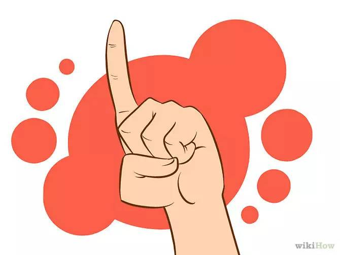
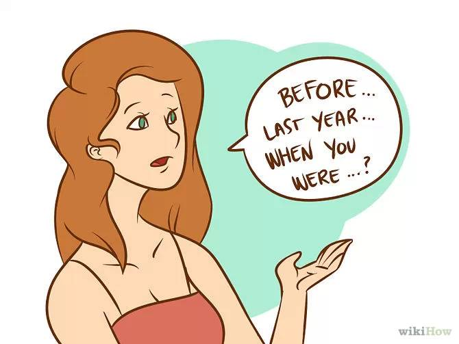
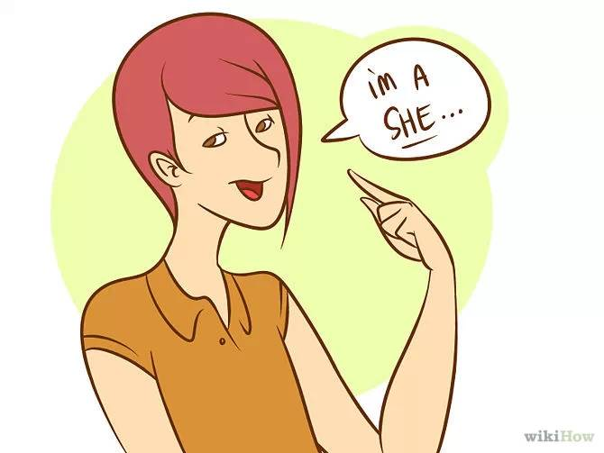
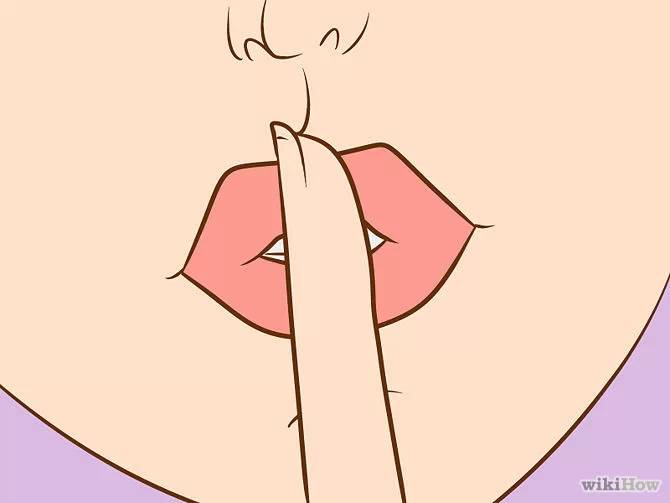
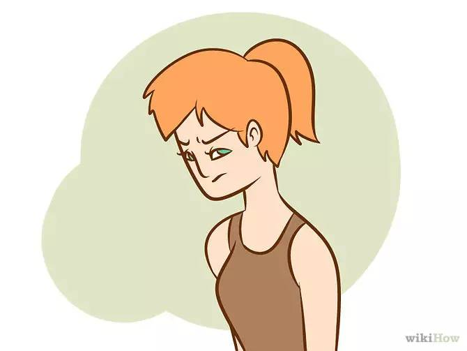
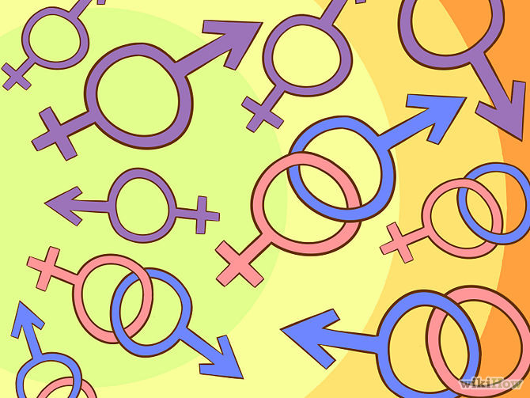
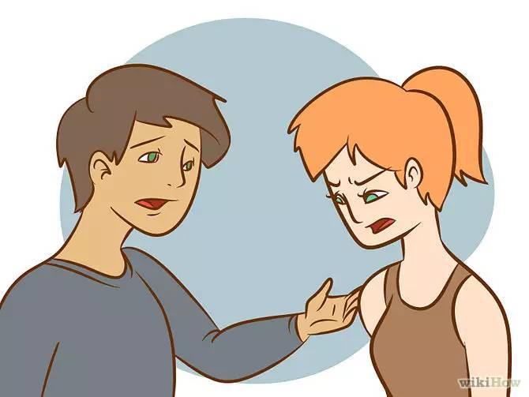

如何尊重一位跨性别者
如果你最近知道身边有人是跨性别者，你可能不知道如何定义他们的性别，或者不确定在他们面前要如何表现，才能避免冒犯或伤害他们。这篇文章里，“跨性别者”指的是那些不认同自己天生的性别（身体）的人。在全世界范围内、不同文化的人群中都有跨性别者——实际上，很难说出哪个国家或文化里没有跨性别者。在现在这个社会上，对于这些人来说，有时候不太容易说清他们的性别。你要理解并尊重那些你难以说清性别、不能简单地分为“男性”或“女性”的人。你要从使用正确的人称代词开始做起。
步骤

无条件地跟这个人相处，就像你与其他人相处一样，特别是在不涉及性别的生活领域。对于性别这件事，人们知道了也就完事了，之后再继续生活其实是与性别没什么关系的。所以你要尊重每个人。
你得知道，当你说“因为”某事而尊重某人的时候，我们就不是无条件地按照对方表现出来的性别而与对方相处了。如果你的目标是“因为”他们不一样而要尊重他们，你反而是在强调差异，就是在说正因为这个人跟我们不同，我们才要尊重他。事实上，没有什么是不同的，我们要像和其他人相处一样和这个人相处。
最重要的是，把他们看作他们所认定的性别的人，称呼他们自己选择的名字（无论他们的身体外表如何）。（除非他们没有出柜，或没有告诉你。问一下你有没有让他们觉得不舒服的时候。
小心地使用过去式。当你提到过去时，尽量不要使用“当你是以前的性别时”或“天生是男/女”之类的措辞，因为很多跨性别者认为自己一直是现在呈现给你的这个性别，但是因为各种原因不得不隐藏起来。问问跨性别者他们希望如何在过去式中被指代。
有一个解决办法，就是在谈论过去时使用其他方式，避免提到含有性别意味的人称代词，例如“去年”、“你小的时候”、“你高中时”等等。如果你不得不使用代词来指代一位跨性别者，你可以说“在你把你的真实性别公开之前”或“在你开始转变之前”（如果可以这样说的话）。
使用适合对方性别的语言。问问跨性别者希望你用哪种代词来称呼他们，并且尊重他们的选择。例如，认为自己是女性的人可能偏爱代表女性的代词，例如她、女演员、女服务员等等；认为自己是男性的人可能偏爱代表男性的代词，例如他、他的等等。有一些跨性别者已经开始使用中性的代词，例如它、它的、它们等等，但这是个人喜好问题。他们让你用什么代称，照做就好了。
你的朋友杰克刚刚公开自己是个跨性别者，并且希望大家叫她玛丽。从这时起，你就不要再说“这是我的朋友杰克，我从小学起就认识他了”，而是改成“这是我的朋友玛丽，我从小学起就认识她了”。你要是觉得尴尬，也得留到下次你和玛丽单独谈话时再表现出来。显然，如果你不想失去朋友，你需要尊重玛丽的意愿，把她当做现在的她，而不是你以前认识的那个人。虽然跨性别者可能是你以前就认识的人，但是你要明白，你从现在开始才对他们有了进一步的了解。
不要害怕问问题。有些（但肯定不是全部）跨性别者愿意回答关于他们的身份或性别的问题。但是不要让他们把什么都告诉你，你有责任自己去获取一些信息。同样，如果对方不愿意回答你的问题，不要逼问他们。
最后，关于外生殖器、手术、之前使用的名字的问题，只能在你将要向对方提供医疗服务、和对方开始性关系或填写一些需要曾用名的法律文件的情况下才可以问。
尊重跨性别者的隐私。不要在未经允许的情况下泄露对方是跨性别者的身份。告诉大家自己是跨性别者是个非常困难的决定，不要太草率。未经允许就让他们“出柜”是一种对信任的背叛，可能会毁掉你们之间的关系。就具体情况而言，还可能让他们面临失去很多东西、甚至受到伤害的风险。如果他们准备好了，他们自然会告诉你自己想要公开了。
这个建议适合那些已经彻底转变或还没有开始转变性别的人。对于那些每天24小时都以自己认为合适的性别生活的人来说，很多都不希望身边的人知道自己以前的性别。
不要假设你知道对方经历了什么。不同性别认知的表现方式有很多种。认为自己被“困在一个男性或女性的身体里”，认为变性女更有女人味，或者变性男更有男子气概，认为所有的跨性别者都会用激素药物或接受手术，这些陈词滥调对于一部分人来说适用，但不适合全部。你要倾听对方描述的自己的具体情况，不要用你先入为主的想法去判断。
不要把你以前了解的理论强加给对方，或者假设你面前的这个人的经历，和你以前认识或听说的某个跨性别者的经历一样。不要认为他们转换性别是因为过去生活中受到的创伤，或者是为了逃脱身体的束缚。
开始学会分辨“性别认知”和“性取向”的区别。不要认为他们的性别和性取向相关——实际上不是这样的。跨性别者中有异性恋、男同性恋、女同性恋、双性恋、质疑性向者和无性主义者。如果对方告诉了你他/她的性取向，对方的措辞是什么样的，你之后就得怎么说。






对跨性别者和普通人一视同仁。虽然他们可能会希望你特别关注他们一下，但是他们不希望你把这当作一件大事。当你了解了足够多的信息时，你要注意不要过分地关注他们。跨性别者仍然保持着他们出柜以前的一些性格特征，你要像对待其他人一样对待他们。
愿意去倾听。很多跨性别者生活在小团体当中，只和同类型的人们分享自己的经历。经常向普通人倾诉、说出自己的经历对他们和我们都有帮助。
不要迷惑。如果你觉得这比较困难，就告诉他们。说实话，和隐瞒、孤立他们相比，还是对他们直言不讳要简单一些。
和他们一起出去。要显得“正常”——你要习惯他们的外表，不久你就会觉得他们并不是奇怪的人，他们就像“丽丽”或“小明”一样普通。你也许会和他们成为好朋友。
那些开始表现出与出生性别不符的另一种性别的人，往往会经历生活的巨大变化。你要有耐心，要理解他们，要愿意去和他们讨论这些变化，帮助他们度过这个困难、情绪化的时期。尽量问一些开放性的问题，让他们可以跟你分享一些经历，而又不会觉得不舒服。
例如“最近怎么样？”“你看上去压力很大，愿意说说吗？”“你看上去很开心，发生什么好事了？”“在你经历这些改变时，我能帮你吗？”“如果你想讨论一下，我永远都愿意听你说。”

小提示
“性别焦虑症”是医生和心理学家在DSM-5（精神疾病的诊断和统计手册，第五版，2013.5）中应用的名词。DSM-4中使用的是“性别认定障碍”，但是因为这个词含有病理性的意味，认为跨性别者有某种“障碍”，而不是人类发展中很自然的一种变异（虽然只有群体中的一小部分人有这种变异），所以这个词被替换掉了。
不是所有的跨性别者都想做外生殖器重建手术（GRS）。外生殖器重建手术一般被称为“变性手术”。不要觉得你可以随便问某个人是否打算接受手术、使用激素等等，你不能去打探别人的医疗事务。另外，不要觉得只有一种所谓“正确”的转变方式（例如，“要想真的变性”或“结束你的转变”，你必须要接受外生殖器重建手术）。
如果你不小心说错了人称代词（“她”或“他”），不要不停地道歉，只要注意在后续的交谈中使用正确的代词就好。
不要问跨性别者的生殖器是什么样，以及他们怎样做爱。同样，询问顺性别者（天生的性别和自我认知的性别一致的人）怎样做爱也是不合适的。
很多人认为“跨性别”是一个描述性的形容词，不是个名词或动词。还有一些人的意见相反。就像你不会称呼一位长者“老”或“老的”一样，你也不能只用“跨性别”来称呼别人，要加上“的人”、“男人”、“女人”等合适的名词。有些跨性别者会觉得那种称呼很不近人情、不人性化。
有些跨性别者愿意回答问题，有些不愿意。如果一位跨性别者不愿意回答问题，或感觉不舒服，就顺其自然吧。如果你想要知道一些信息，可以读读下面给出的资料。
除非你们关系很亲密，否则问对方“真名”或出生时的姓名是不礼貌的——他们认为自己的姓名要与性别相符（如果他们改了名字），他们希望你也这样看待他们。
在受过教育的群体中（人们会接触有各种身心障碍或异常的人），被广泛认同的是，一个人并不应该首先被认为是异常的人（例如跨性别者），而是被看作一个稍有不同的普通人（例如，改变性别的人）。这有点不容易说清楚，但是在倾听者的意识里，会先把对方当作一个个体的人，然后才会关注到他们的不同之处。据我所知，一个很小的，但很重要的区别。
有些人认为对于跨性别者，只有改变他们的外表（通过手术和/或激素）来让他们的身体和精神上的性别特征相符，才算是“治愈”了他们。这些人认为是身体出了一些问题，而不是精神。最近的医疗证据和权威机构支持这些治疗方式的效果（参见美国医学会、美国心理学会、美国社会工作者协会和世界跨性别者健康专业协会的声明）。有些人认为最主要的问题是社会对性别的期待和男人、女人的限制，我们需要接纳更广泛的、不同的性别认知和表达。
警告
千万不要和一位跨性别者说，人们会因为他/她的性别认知而不理解或不爱他/她。这很伤人，而且也不是真的。很多跨性别者可以被理解、被接受、被爱。
不要把跨性别者和未改变性别的人进行比较，称呼后者是“真正的”或“正常的”男孩或女孩。让男性变成“真的”男人，女性变成“真的”女人的是他们对自己性别的认知，而不是其他人对他们身体的评价和分类。跨性别的男性与普通的男性一样有男子气概，跨性别的女性也和普通女性一样有女人味。
不要使用侮辱性的字眼，例如“半导体”、“人妖”。这些词语很让人难以忍受、不近人情、不人道。
就算你对跨性别者持有异议，你也要尊重他们，不要公开地羞辱他们。羞辱别人、让别人尴尬对任何人都没有好处。这种处境对于跨性别者来说也很不安全。
“双性人”这个词一般用来指：某个人出生时的生殖系统和/或解剖学性征不属于通常意义上的男性或女性。有些双性人也是跨性别者，但是这两者是不同的，不能一概而论。
当你提到某个人的跨性别是一种“选择”时要小心。从它的定义上来讲，“性别焦虑症”显然不是一种选择。有些跨性别者会把他们的性别认知说成是一种选择，有些则不会。有些人认为，这种“选择”可以让他们的身体和精神上的性别相符合。你要尊重他们，不要通过他们能不能“控制自己”来评价他们。
不要通过贴标签（比如单性女、变性男、变性女）来使用“联合不合”（分隔开但仍然是有意义的）语言称呼对方，除非对方确实用这个说法指定自己的性别。在生活中，人们只是按照自己的性别认同而行动，无论对于他们来说所认同的性别是什么。这里的潜台词是，你并不属于你的性别，而是别的非真实的某种存在。